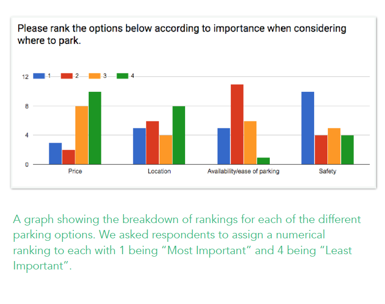
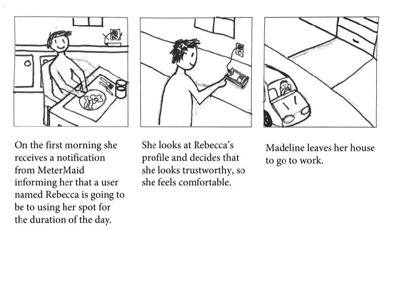
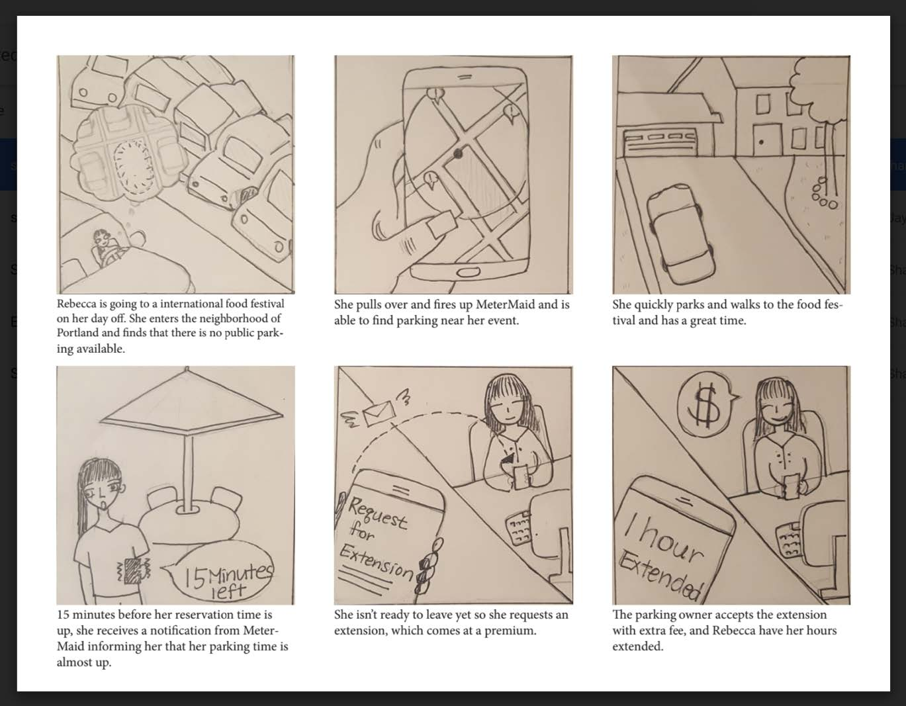
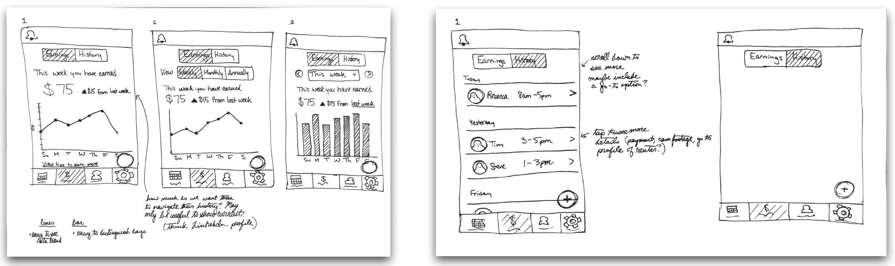
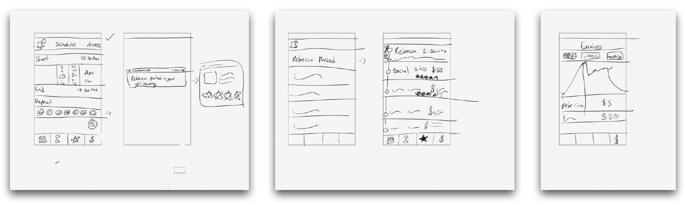

Parking is expensive and difficult to find, yet some research suggests that around 3 parking spaces exist for every car.
How can a resource seem scarce, yet actually be so abundant? One contributing factor is that some spaces can only be utilized by a specific person, like a driveway at someone’s house. When the homeowner is away, their driveway is unoccupied, making it an un-utilized resource. Is it possible to make these exclusive resources available to others when their primary owner is not using them? And why doesn’t this happen now? One contributing factor is that there is a mutual lack of trust between the person with the driveway and the person looking for parking.
MeterMaid is an application that enables homeowners to capitalize upon their open driveway space by connecting with drivers seeking convenient and affordable parking. We designed it specifically to facilitate trust between the two parties, particularly on the homeowner’s side by enabling them to monitor their property in the application, report inappropriate or malicious behavior, and filter out and block certain users.
We started our research by understanding the target personas for the application. As part of the assignment, we were provided one for the homeowner and one for the driver.
After examining the personas and problem statement, we conducted an Ecosystem Collection where we discussed what we know about the parking domain, what we don’t know, and what are the critical questions we want to explore. From the ecosystem collection, we determined that we should focus on understanding what the current experience is for people looking for parking as well as understanding the factors that go into successful crowdsharing platforms such as Uber, AirBnB, and eBay, particularly how they build trust between their users.
Based on this focus, we generated the following specific research objectives:
• To gain a more complete understanding of the context in which people look for parking and what they prioritize (proximity,
cost, etc.).
• To understand the existing choices for parking and how they operate.
• To understand the trust mechanics of existing resource sharing services (e.g. AirBnB, Uber) and to understand what led
current users to trust these services.
We had a couple of key takeaways from our Google Survey:

• Several respondents remarked that it is currently very hard to find
available parking and the price of the parking in advance when using
navigation applications such as Google Maps.
• Of the people who took the survey, most indicated that safety is the
most important aspect when considering parking, followed by
availability/ease of parking. Surprisingly, they said price was the least
important, which contradicts the information we had in our scenario
(Rebecca doesn’t want to pay the high fees for parking her car in a lot
near the hospital) as well as what the Freakonomics podcast indicated,
where people in will spend more time driving around looking for a spot
that they do not have to pay for [1].
From the 21 scenarios we generated, we decided to pick 2 scenarios to flesh out in more details in storyboards. Below are a couple of sample storyboards we generated:


Hi, I think you width is too small.
Please make the screen full page to continue.